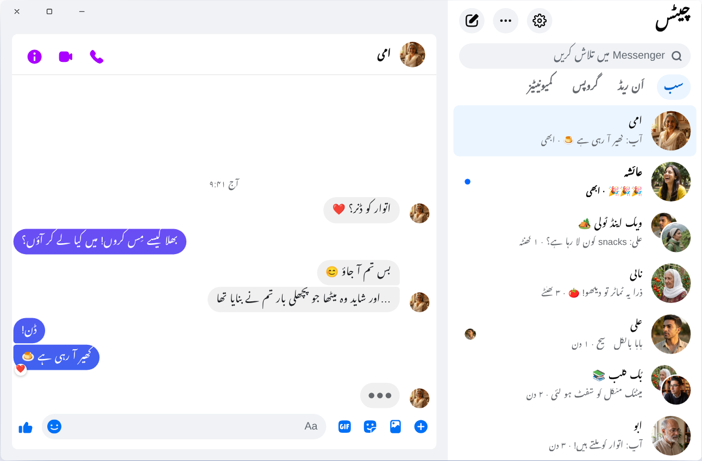

Chatpane / Windows
اپ ڈیٹ: نومبر 2026
2026 میں کمپیوٹر پر میسنجر کیسے چلائیں
Meta نے 15 دسمبر 2025 کو Windows کی میسنجر ایپ بند کر دی، اور messenger.com اب آپ کو Facebook پر بھیج دیتا ہے۔ Windows 10 یا 11 والے کمپیوٹر یا لیپ ٹاپ پر آج یہ طریقے چلتے ہیں۔
مفت اور اوپن سورس · Windows 10 اور 11 · Meta کی ایپ نہیں
مختصر جواب
اب کمپیوٹر کے لیے میسنجر (Messenger) کی کوئی آفیشل ایپ نہیں رہی۔ Meta نے اسے Microsoft Store سے ہٹا دیا، اور اپریل 2026 سے کمپیوٹر پر میسنجر صرف facebook.com/messages پر، Facebook کے اندر چلتا ہے۔
اگر آپ میسنجر کو اس کی اپنی ونڈو میں چاہتے ہیں، فیڈ اور Reels کے بغیر، تو Chatpane، Windows کے لیے ایک مفت اور اوپن سورس ایپ ہے جو صرف آپ کی چیٹس کھولتی ہے۔ یہ ایک آزاد پروجیکٹ ہے، Meta کا نہیں۔
پرانی گائیڈز اور ڈاؤن لوڈ سائٹس اب کیوں کام نہیں آتیں
بہت سی پرانی گائیڈز اب بھی کہتی ہیں کہ Microsoft Store میں "Messenger" تلاش کریں، اور Softonic جیسی ڈاؤن لوڈ سائٹس اب بھی Messenger 2250.1 کا انسٹالر دے رہی ہیں۔ اس کا کوئی فائدہ نہیں: یہ وہی ایپ ہے جو Meta نے دسمبر 2025 میں بند کر دی تھی، اور کھولنے پر یہ بس آپ کو Facebook پر بھیج دیتی ہے۔
اپنا Facebook پاس ورڈ کسی ایسے پروگرام یا ویب پیج میں نہ ڈالیں جس کا ذریعہ آپ نہیں جانتے۔ اگر کوئی آپ کو اپنے الگ لاگ اِن والا "PC کے لیے میسنجر" دے، یا WhatsApp پر اس کا لنک بھیجے، تو ہوشیار رہیں۔
Windows پر میسنجر کو کیا ہوا؟
2024 میں Meta نے Windows ایپ کی جگہ ایک پیک کیا ہوا ویب ورژن دے دیا۔ اکتوبر 2025 میں اس نے ایپ بند کرنے کا اعلان کیا اور اسے Microsoft Store سے ہٹا دیا، اور 15 دسمبر 2025 کو ایپ نے کام کرنا چھوڑ دیا۔ اپریل 2026 میں messenger.com بھی بند ہو گیا۔ پوری تفصیل اور تاریخیں میسنجر ڈیسک ٹاپ ایپ بند: کیا ہوا میں ہیں۔
آپ کے آپشنز
Windows پر میسنجر چلانے کے طریقے
Windows پر Chatpane
Chatpane وہی میسنجر کھولتا ہے جو آپ براؤزر میں دیکھتے ہیں، اس لیے آپ کی چیٹس، گروپس، کالز اور تصویریں سب وہیں ہیں اور فون کے ساتھ سنک رہتی ہیں۔ یہ بس Facebook کا باقی سب کچھ ہٹا دیتا ہے۔
- صرف میسنجر۔ Facebook کی فیڈ، Reels، Marketplace اور سرچ چھپ جاتے ہیں۔
- کام کے نوٹیفیکیشنز۔ ونڈو کھولے بغیر نوٹیفیکیشن ہی سے جواب دیں، ری ایکٹ کریں، پڑھا ہوا نشان زد کریں یا میوٹ کریں۔ اگر آپ Facebook پیج یا Marketplace پر کاروبار کرتے ہیں تو کسٹمرز کو جلدی جواب دینا آسان ہو جاتا ہے۔
- ٹاسک بار اور سسٹم ٹرے۔ آئیکن پر نہ پڑھے پیغامات کی تعداد، Windows کے ساتھ خود بخود شروع ہونا، اور ونڈو بند کرنے پر ٹرے میں چلتے رہنے کا آپشن۔
- پرائیویسی۔ ٹائپنگ چھپائیں، اسکرین شیئر کرتے وقت نام اور تصویریں چھپائیں، اور Facebook کی اینالیٹکس کی درخواستیں بلاک کریں (یہ شروع سے آن ہوتا ہے)۔
- اردو میں۔ Chatpane آپ کے کمپیوٹر کی زبان کے مطابق چلتا ہے۔ اگر آپ کا Windows انگریزی میں ہے تو Chatpane کی سیٹنگز میں Settings ← General ← Language سے اردو چن لیں، پھر اس کے مینو اور سیٹنگز اردو میں نظر آئیں گے۔

انسٹال کرنے کا طریقہ
- Windows انسٹالر ڈاؤن لوڈ کریں۔ اگر آپ کے کمپیوٹر میں ARM پروسیسر ہے تو ARM64 انسٹالر لیں۔
- اسے کھولیں۔ Chatpane کے Windows انسٹالرز پر ابھی ڈیجیٹل دستخط نہیں ہیں، اس لیے SmartScreen "Windows protected your PC" دکھا سکتا ہے۔ "More info" پر کلک کریں، پھر "Run anyway" پر۔ Chatpane صرف chatpane.app یا GitHub سے ڈاؤن لوڈ کریں، کسی اور سائٹ یا شیئر کیے گئے لنک سے نہیں۔
- اپنے عام Facebook اکاؤنٹ سے لاگ اِن کریں۔ آپ کی چیٹس فوراً سامنے آ جائیں گی۔
کچھ انسٹال نہیں کرنا چاہتے؟ پورٹیبل ورژن (.zip) انسٹالر کے بغیر چلتا ہے اور اسے ایڈمنسٹریٹر رائٹس نہیں چاہییں، اس لیے دفتر کے کمپیوٹر پر بھی کام آتا ہے۔
عمومی سوالات
کمپیوٹر پر میسنجر کے بارے میں سوالات
کیا Chatpane مفت ہے؟
جی ہاں۔ نہ کوئی قیمت، نہ سبسکرپشن، نہ اشتہار۔ یہ MIT لائسنس کے تحت اوپن سورس ہے، اور اس کا کوڈ GitHub پر موجود ہے تاکہ کوئی بھی اسے جانچ سکے۔
کیا یہ میسنجر کی آفیشل ایپ ہے؟
نہیں۔ Chatpane ایک آزاد پروجیکٹ ہے، Meta سے اس کا کوئی تعلق نہیں۔ یہ facebook.com/messages والا اصلی میسنجر اپنی الگ ونڈو میں دکھاتا ہے، اس لیے آپ کے پیغامات میسنجر ہی سے گزرتے ہیں اور Meta کی شرائط لاگو رہتی ہیں۔
کیا یہ Facebook اکاؤنٹ کے بغیر چلتا ہے؟
نہیں۔ اپریل 2026 سے Meta، Facebook اکاؤنٹ کے بغیر میسنجر صرف موبائل ایپ میں چلانے دیتا ہے۔ کمپیوٹر پر Chatpane کو، اور کسی بھی دوسرے طریقے کو، ایسا اکاؤنٹ چاہیے جو facebook.com پر لاگ اِن ہو سکے۔
کیا یہ Windows 10 پر چلتا ہے؟
جی ہاں، Windows 10 اور 11 دونوں پر۔ Chatpane، Microsoft Edge WebView2 استعمال کرتا ہے جو Windows 11 میں پہلے سے موجود ہے۔ Windows 10 پر اگر یہ موجود نہ ہو تو انسٹالر اسے ڈاؤن لوڈ کر لیتا ہے۔
کیا ویڈیو کال ہو سکتی ہے؟
جی ہاں۔ یہ مکمل میسنجر ہے، اس لیے وائس اور ویڈیو کالز facebook.com کی طرح اپنی الگ ونڈو میں کھلتی ہیں۔
Chatpane حاصل کریں
مفت اور اوپن سورس۔ سیکنڈوں میں ڈاؤن لوڈ ہو جاتی ہے - یہ صرف تقریباً 4 MB کی ہے۔
پرانا Intel Mac؟ Intel .dmg
checksums کے ساتھ مکمل فہرست
GitHub
پر موجود ہے - یا brew install --cask kristofferR/tap/chatpane